자기비파괴검사기사(구) (2006-03-05 기출문제)
1과목: 자기탐상시험원리
1. 어떤 긴 코일에 2[A]의 전류를 흘렸을 때 코일 중심의 강도가 400[A/m] 되었다면 1[m] 길이에 코일을 몇 번 감았겠는가?
- 100
- 200
- 300
- 400
(정답률: 알수없음)

2. 자극의 단면이 25mm×25mm 인 극간식 자분탐상의 전자속을 측정하였더니 0.625mWb 였다. 자속 밀도는 몇 Tesler가 되는가?
- 1.0
- 2.0
- 4.0
- 10.0
(정답률: 알수없음)
3. 자분탐상시험시 투자율이 다른 재질경계에서 나타나는 지시에 대한 확인검사는 자분탐상시험만으로는 판별이 용이하지 않다. 이러한 의사지시모양의 판별 방법으로 적당치 않은 것은?
- 표면연마후 부식시켜 거시적 조직검사
- 표면연마후 부식시켜 미시적 조직검사
- 탈자후 재검사하여 재현성 확인
- 침투탐상 등 다른 시험방법으로 확인검사
(정답률: 알수없음)
4. 석유저장 탱크나 구형 탱크와 같은 대형구조물의 용접부 균열 등의 불연속을 탐상하기 위하여 널리 사용되는 자분탐상 검사방법은?
- 축통전법
- 코일법
- 극간법
- 중심도체법
(정답률: 알수없음)
5. 물질이 자화되고 자화력을 제거한 후에도 어느 정도의 자화상태를 나타내는 재료의 특성을 무엇이라 하는가?
- 투자성(permeability)
- 잔류자기(residual magnetism)
- 자구(magnetic domain)
- 보자성(retentivity)
(정답률: 알수없음)
6. 납 또는 구리망사를 사용하여 전극의 접촉면이나 Head St-ock의 접촉면의 면적을 넓혀주는 주된 이유는?
- 접촉면을 증가시키고 부품이 타는 것을 줄이기 위해
- 납과 구리는 용융점이 낮기 때문에
- 시편의 열발생을 돕고 자장유도를 쉽게하기 때문에
- 접촉면과 자속밀도를 증가시키기 위해서
(정답률: 알수없음)
7. 직각통전법으로 긴봉의 시험체 전체 길이를 시험할 경우, 1회의 통전(자화)으로 전체를 시험할 수 없다면 어떻게 해야 하는가?
- 시험체의 굵기 이하의 등간격으로 나누어 여러번 통전하여 시험한다.
- 시험체의 굵기와 관계없이 전극크기에 맞추어 나누어 여러 번 통전하여 시험한다.
- 전극크기에 비례하되 전극보다는 적게 나누어 여러 번 통전하여 시험한다.
- 시험체의 굵기와 전극크기에 따라 등간격으로 나누어 여러 번 통전하여 시험한다.
(정답률: 알수없음)
8. 다음 중 비파괴검사에 대한 내용으로 틀린 것은?
- 내부결함의 검출에 적당한 방법은 방사선투과시험과 초음파탐상시험이다.
- 초음파탐상시험에서는 초음파의 진행방향에 평행인 방향의 결함을 검출하기 쉽다.
- 표면결함의 검출에 적당한 시험방법은 자분탐상시험, 침투탐상시험 및 와전류탐상시험이다.
- 용접부의 불로 홀 검출에 최적인 시험법은 방사선투과 시험이다.
(정답률: 알수없음)
9. 길이는 동일하나 직경이 1인치 및 2인치인 2개의 봉에 같은 크기의 자화전류를 통전시켰을 경우, 봉의 표면에서 나타나는 자계의 세기에 대해 올바르게 설명한 것은?
- 봉의 표면에서 나타나는 자계의 세기는 동일하게 나타난다.
- 1인치 봉의 표면에서의 자계의 세기는 2인치 봉의 자계세기의 약 2배가 된다.
- 2인치 봉의 표면에서의 자계의 세기는 1인치 봉의 자계세기의 약 2배가 된다.
- 1인치 봉의 표면에서의 자계의 세기는 2인치 봉의 자계세기의 약 1/4이 된다.
(정답률: 알수없음)
10. Bolt Hole 검사시 나타난 지시를 확인하기 위한 다음의 비파괴시험 방법 중 가장 적합한 것은?
- 백열등 또는 확대경으로 확인
- 자분탐상시험법
- 형광침투탐상시험
- 방사선투과시험
(정답률: 알수없음)
11. 금속원자들이 모여 형성하는 가장 작은 영구자석을 무엇이라 하는가?
- 격자구조(lattice structure)
- 자구(magnetic domain)
- spin
- band 구조
(정답률: 알수없음)
12. 전류계가 부착된 자화장치의 최소한의 교정주기는?
- 3개월마다
- 6개월마다
- 1년마다
- 2년마다
(정답률: 알수없음)
13. 그림에 나타낸 자장분포곡선은 다음 중 어느 경우인가?
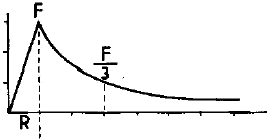
- 속이 찬 자성 도체에 직류가 흐를 때
- 속이 찬 비자성 도체에 직류가 흐를 때
- 속이 빈 비자성 도체에 교류가 흐를 때
- 속이 빈 자성 도체에 직류가 흐를 때
(정답률: 알수없음)
14. 그림에서 항자력(coercive force)의 크기를 나타내는 부분은?
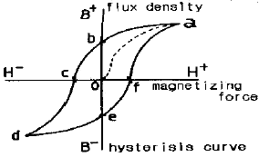
- o-a
- o-b
- o-c
- b-e
(정답률: 알수없음)
15. 시험체에 자기에너지를 부여하지 않는 비파괴검사법은?
- 자기적 음향법(Magnetic Mechanical Acoustic Emission Testing)
- 전자 음향법(Electromagnetic Acoustic Testing)
- 핵자기 공명법(Nuclear Magnetic Resonance testing)
- 누설자속 탐상법(Magnetic Leakage Flux Testing)
(정답률: 알수없음)
16. 직류전류와 습식자분을 사용하여 자기탐상시험 결과, 자분지시가 나타났다. 이 지시가 표면불연속 또는 표면직하 불연속인지를 확인하기 위한 조치로 옳은 것은?
- 자화전류를 높여 같은 방법으로 재시험한다.
- 충격전류(surge current)로 재시험한다.
- 탈자 후 교류(AC)로 재시험한다.
- 탈자 후 건식자분을 사용하여 반파정류직류(HWDC)로 재시험한다.
(정답률: 알수없음)
17. 개선폭이 작은 뒷면따내기(Backgouging)한 면의 자분탐상 검사방법으로 가장 적당한 것은?
- 극간법-건식
- 프로드법-건식
- 극간법-습식
- 프로드법-습식
(정답률: 알수없음)
18. 자분탐상시험시 일반적으로 직류로 검사할 때 나타난 지시가 표면 결함인지 표면하 결함인지 확인하기 위한 다음 단계의 일은?
- 직류전류의 크기를 1/10로 줄여서 재검사한다.
- 교류로 재검사한다.
- 탈자후 자분을 적용한다.
- 충격 전류로 재검사한다.
(정답률: 알수없음)
19. 고주파에서 와전류는 도체의 표면층에만 흐른다. 이런 현상은?
- 표피 효과
- 피에조 효과
- 반자장 효과
- 컴프턴 효과
(정답률: 알수없음)
20. 자분모양의 기록방법 중 전사에 대한 설명으로 잘못된 것은?
- 접착성 테이프에 전사한 것을 복사해 두면 장기간 보존 할 수 있다.
- 셀로판 테이프가 가장 많이 사용된다.
- 자기 테이프에 녹자(錄磁)하는 방법이 있다.
- 접착성 테이프에 자분지시모양을 전사하는 방법은 습식흑색자분을 전사하는 것이 좋다.
(정답률: 알수없음)
2과목: 자기탐상검사
21. 그래프에서 다른 곡선과 비교했을 때 A에 해당되는 자화전류는?
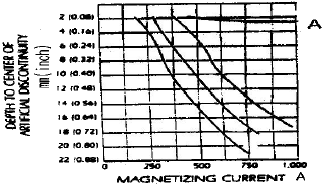
- 교류전류
- 직류전류
- 단상반파전류
- 충격전류
(정답률: 알수없음)
22. 그림은 어떤 부품의 자분탐상시험시 자장의 분포를 나타낸 것이다. 어떤 부품의 형태로 판단되는가?
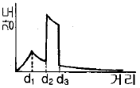
- 봉재
- 원통재
- 판재
- 두꺼운 판재
(정답률: 알수없음)
23. 자분탐상검사시 일반적으로 사용되는 비형광 건식자분의 크기는?
- 25μm 이하
- 1~50μm
- 25~100μm
- 100~1000μm
(정답률: 알수없음)
24. 코일법 적용시 고려사항이 아닌 것은?
- 반자장
- 코일과 시험체의 위치
- 시험체의 직경과 길이
- 결함의 위치
(정답률: 알수없음)
25. 용접폼에서 발생 가능한 결함끼리 조합된 것은?
- 겹침-모래개재물
- 탕계-수축공
- 슬래그-융합불량
- 백점-균열
(정답률: 알수없음)
26. 자분탐상시험 중 안전을 위해 고려할 대상이 아닌 것은?
- 시험 장소
- 전리방사선
- 자외선 등
- 전기 충격
(정답률: 알수없음)
27. 다음 중 탈자가 필요없는 경우는?
- 시험체를 큐리점 이상으로 열처리하는 경우
- 전회의 자계보다 낮은 자계로 탐상할 경우
- 시험체가 계기부품으로 사용되는 경우
- 절삭 공구강을 자분탐상한 경우
(정답률: 알수없음)
28. 다음 중 검사를 적용하기에 가장 적합한 재질은?
- 티타늄 합금
- 니켈 합금
- 알루미늄 합금
- 구리
(정답률: 알수없음)
29. 선형자화법에 대한 설명 중 틀린 것은?
- 대표적인 방법은 코일법이다.
- 원주방향의 결함이 검출이 잘된다.
- 탈자 할 필요가 없다.
- 시험체의 치수에 따라 자화전류를 조절한다.
(정답률: 알수없음)
30. 습식형광자분으로 연속법에 의한 탐상시 바탕이 진하고 시모양의 관찰이 방해되었을 때의 후속 조치사항으로 올바른 것은?
- 자분의 농도를 낮게 하여 재시험한다.
- 시험체에 진동이 생기지 않게 하여 시험한다.
- 물로 씻고 남은 자분으로 재시험한다.
- 자외선간도를 낮게 하거나 멀리하여 보기 쉽게 한다.
(정답률: 알수없음)
31. 대형 시험체의 부분검사법으로 용이한 자분탐상검사의 자화장치는?
- 축통전 및 직각 통전장치
- 츠로드 및 요크 장치
- 자속 관통 및 전류관통 장치
- 코일 및 회전자계 장치
(정답률: 알수없음)
32. 자분탐상시험 재료인 자분이 갖추어야 할 성질에 대하여 올바르지 않은 것은?
- 자분의 색조와 휘도는 자분지시 모양의 관찰시에 중요하며 시험면과 비교하여 높은 콘트라스트를 갖고 있어야 한다.
- 자분에 부착된 착색제가 많을수록 자기적 성질이 향상되며, 결함부의 흡착성이 좋다.
- 자분의 입도와 결함의 크기에서 큰결함에는 큰입도의 자분이 좋고 미세한 결함에는 작은 입도의 자분이 좋다.
- 자분의 자기적 성질에서 투자율이 높고 보자력이 작은것이 좋다.
(정답률: 알수없음)
33. 다음 중 자분탐상검사시 시험면을 분할하여 시험하는 경우 설명이 올바르지 않은 것은?
- 시험체가 크거나 너무 길어 1회의 자화로 시험할 수 있는 경우 분할한다.
- 시험체의 모양이 복잡하기 때문에 1회 자화로 필요한 유효자계 강도를 시험체에 가할수 없는 경우 분할한다.
- 시험체를 분할한 경계부는 이웃끼리의 유효자계가 겹치지 않도록 한다.
- 시험체의 단면이 급변하여 1회 자화로 시험하면 시험체의 유효자계 강도가 너무 강하거나 약할 경우 분할한다.
(정답률: 알수없음)
34. 자분탐상검사에서 시험체 표면결함의 검출에 사용되는 전류형태 중 가장 우수한 것은?
- 반파
- 교류
- 작류
- 펄스형 직류
(정답률: 알수없음)
35. 자분탐상시험시 부품에 비관련성 지시가 나올 경우 취할 조치로 가장 적당한 것은?
- 부품 사용에는 문제가 없으므로 그대로 사용한다.
- 실제 결함의 존재 유무를 파악키 위해 재검사한다.
- 완전히 제거시켜야 한다.
- 부품에 문제가 있으므로 폐기한다.
(정답률: 알수없음)
36. 봉형 자성체에서 원주방향의 균열이 예상된다면 자화방법으로 적절한 것은?
- 축통전
- 프로드법
- 전류관통법
- 코일법
(정답률: 알수없음)
37. 다음 중에서 잔류자장을 제거하는 방법이 아닌 것은?
- 제품을 코일로 부터 멀리한다.
- 코일을 제품으로 부터 멀리한다.
- 자화전류를 단계적으로 증가시킨다.
- 제품은 큐리점 이상으로 열처리한다.
(정답률: 알수없음)
38. 습식자분탐상용 검사맥의 자분분산 농도가 결함 검출능력에 미치는 영향의 설명으로 옳지 못한 것은?
- 자분의 입도가 작으면 자분농도는 엷은 것이 좋다.
- 검사액의 적용시간이 길면 자분농도는 엷은 것이 좋다.
- 검사품의 표면이 거칠면 자분농도는 짙은 것이 좋다.
- 자분농도가 너무 짙으면 의사무늬가 나타나기 쉽다.
(정답률: 알수없음)
39. 시험체의 외경이 4인치 일 때 축통전법에서 자화전류치는?
- 2000A
- 3000A
- 4000A
- 5000A
(정답률: 알수없음)
40. 다음 중 자분탐상검사에서 결함 검충능이 높은 경우는?
- 투자율이 큰 재료일수록 검충능이 높다.
- 자기 포화점에서 검출능이 높다.
- 자속 밀도가 낮을수록 검출능이 높다.
- 자분 입도가 클수록 검출능이 높다.
(정답률: 알수없음)
3과목: 자기탐상관련규격및컴퓨터활용
41. ASTM E 709에 따라 외경 5인치 크기의 원형부품을 직경 1인치의 중심도체를 사용하여 자분탐상시험을 하고자 한다. 중심도체의 직경에 따른 검사유효범위 때문에 원형 부품을 몇 번 나누어 자화시켜야 하는가? (단, 원형부품의 중심부는 뚫려 있다.)
- 1번 자화
- 2번 자화
- 3번 자화
- 4번 자화
(정답률: 알수없음)
42. ASME 규격에 의한 프로드(Prod)법 등의 경우 전극 부근의 전류밀도가 높기 때문에 생기는 누설 자속에 의해 형성되는 전극 부근의 자분 모양으로 방사상으로 나타나는 지시는?
- 전류지시
- 전극지시
- 자극지시
- 재질경계지시
(정답률: 알수없음)
43. KS D 0213을 적용하여 전류관통법으로 여러 개의 시험체를 동시에 시험하는 경우, 고려할 사항의 설명이 아닌 것은?
- 자계강도와 도체 중심으로 부터의 거리
- 코일의 지름과 길이의 관계
- 자기펜 자국이 생기지 않도록 주의
- 자계강도와 도체의 반지름과 반비례 관계
(정답률: 알수없음)
44. KS D 0213에 의거하여 자분탐상검사를 수행할 때 전처리방법에 관한 설명이다. 이 중 옳지 않은 것은?
- 시험체는 원칙적으로 단일부품으로 분해하여 검사한다.
- 기름구멍 등에서 시험후 내부의 자분제거가 곤란한 곳은 해가 없는 물질로 채운다.
- 전처리의 범위는 시험범위보다 넓게 잡아야 한다.
- 습식용 자분을 사용하는 경우 원칙적으로 표면을 열풍 건조시킨다.
(정답률: 알수없음)
45. KS D 0213에 따른 자기탐상시험에서 용접부의 열처리 등의 지정이 있을 때, 합격여부 판정을 위한 자기탐상시험 시기는?
- 용접완료 후에 시험한다.
- 용접완료 후 24시간이 경과한 후에 시험한다.
- 열처리 완료 후에 시험한다.
- 열처리 전 및 후에 시험한다.
(정답률: 알수없음)
46. ASME 규격에서 길이가 15인치, 직경이 3인치인 시험체를 코일법으로 검사할 때 자화전류 범위는? (단, 코일은 5회 감겨 있다.)
- 400~600 암페어
- 700~900 암페어
- 900~1100 암페어
- 1400~1600 암페어
(정답률: 알수없음)
47. KS B 0888에 의거 자분탐상시험을 실시할 경우 사용할 수 있는 표준시험편은?
- A1-7/50(직선형)
- A1-7/50(원형)
- A2-7/50(직선형)
- A2-7/50(원형)
(정답률: 알수없음)
48. ASME SE-709에 따라 자분탐상시험을 실시할 때 극간의 거리가 50~100mm인 경우 사용하는 교류형 요크(yoke)는 최소 몇 kg의 보정시편을 들어 올릴 수 있어야 하는가?
- 25N(2.5kg)
- 45N(4.5kg)
- 90N(9kg)
- 180N(18kg)
(정답률: 알수없음)
49. ASME 규격에 따라 자분탐상시험을 할 때 열쇠구멍이나 드릴구멍과 같은 두께 변화나 재질의 고유특성 등의 원인으로 누설자속에 의하여 형성된 단독 또는 모양을 가진 형태로 형성된 자분지시를 무엇이라 하는가?
- 관련지시(relevant indications)
- 무관련지시(nonrelevant indications)
- 거짓지시(false indications)
- 불연속(discontinuities)
(정답률: 알수없음)
50. KS D 0213에 의한 B형 대비시험편에 대한 설명으로 옳지 못한 것은?
- B형 시험편은 검사액의 성능을 조사하는데 사용한다.
- B형 시험편은 원칙적으로 시험품과 동등한 재질의 것을 사용한다.
- B형 시험편에서 자분의 적용은 연속법으로 한다.
- B형 시험편에서 자분을 적용하는 면은 원통면이다.
(정답률: 알수없음)
51. ASME Sec.V. Art.25에서 직류 요크(yoke)법을 사용할 때, 장비 점검시 사용되어진 최대 극간 거리에서 최소 몇 파운드 이상을 들어 올려야 하는가?
- 7파운드
- 10파운드
- 25파운드
- 50파운드
(정답률: 알수없음)
52. ASTM E 709에서 규정한 링시편에 대해 자화전류(FWDC)를 1400[A]로 했을 때 건식자분을 사용하는 경우 나타나야 할 표면하 구멍의 최소 수는?
- 4
- 5
- 6
- 7
(정답률: 알수없음)
53. 한국전력기준(MEN5201) 검사장치의 점검 권고기간을 나타낸 것이다. 적절하지 않은 것은?
- 시스템 성능 인정(시험편 이용) : 1일
- 조명 : 1주
- 습식자분 농도 : 1주
- 조도계 : 6개월
(정답률: 알수없음)
54. ASME Sec.Vll, App.6의 합격 기준치에 따라 평가할 경우 다음 중 불합격 결함은?
- 크기가 1/16인치인 선형 결함
- 크기가 3/16인치인 원형 결함
- 크기가 1/4인치인 원형 결함
- 서로 떨어진 거리가 1/16인치이고, 크기가 3/16인치인 3개의 원형결함 지시
(정답률: 알수없음)
55. KS D 0213에 규정된 자분모양의 분류에 관한 설명이다. 다음 중 옳지 않은 것은?
- 자분모양의 분류는 반드시 시험면에 생긴 자분모양이 의사모양이 아닌 것을 확인한 후에 해야 한다.
- 균열로 식별된 자분모양에 대해서는 균열에 의한 자분모양으로 별도로 분류해야 한다.
- 연속한 자분모양은 선상 또는 원형상 자분모양으로 분류한다.
- 여러 개의 자분모양이 일정한 면적내에 분산해 있으면 분산한 자분모양으로 분류한다.
(정답률: 알수없음)
56. 인터넷에서 내부 컴퓨터 네트워크를 외부 환경으로부터 보호하기 위하여 이용되는 것은?
- 고퍼(Gopher)
- 아키(Archie)
- FTP 서버
- 프럭시(Proxy)서버
(정답률: 알수없음)
57. 컴퓨터의 주기억장치와 중앙처리 장치 사이에서 프로그램 실행 속도차를 해결하는데 도움을 주는 고속 기억장치는?
- 가상메모리
- 보조기억장치
- 반도체 기억장치
- 캐시기억장치
(정답률: 알수없음)
58. 다음 중 인터넷 관련 전자우편 표준통신 규약은?
- PPP
- SMTP
- UDP
- ARP
(정답률: 알수없음)
59. 웹서비스에서 제공되는 여러가지 자원들에 대한 주소를 나타내는 것은?
- HTTP
- URL
- HTML
- XML
(정답률: 알수없음)
60. 표 형식으로 데이터를 입력하고 합, 평균, 그래프 등 다양한 업무의 편의를 제공하는 소프트웨어는?
- 스프레드시트
- 데아베이스
- 문서편집기
- 파워포인트
(정답률: 알수없음)
4과목: 금속재료학
61. 구리의 성질을 설명한 것 중 맞는 것은?
- 경정구조는 상온에서 BCC 이다.
- 전기와 열의 부도체이다.
- 화학적 저항력이 작아서 부식이 잘 된다.
- 구리 중의 불순물은 냉간가공보다 열간가공시에 큰 영향을 미친다.
(정답률: 알수없음)
62. 주조성이 좋고 크리프 특성이 좋아 제트엔진(Jet engine)등의 구조용재료로 가장 많이 사용되는 합금은?
- Al 합금
- Mg 합금
- Ni 합금
- Zn 합금
(정답률: 알수없음)
63. 강에서 Cold shortness의 원인이 되며 고스트라인을 일으켜 파괴의 원인이 되는 것은?
- C
- P
- S
- Mn
(정답률: 알수없음)
64. Ni-4~8%의 martensite 조직의 것으로 보통 Cr을 첨가해서 백주철로 사용하는 주철은 무엇인가?
- 칠드(chilled) 주철
- 가단 주철
- Ni-hard 주철
- 미해나이트(meehanite) 주철
(정답률: 알수없음)
65. 가스침탄법에 관한 설명 중 틀린 것은?
- 가스로는 천연가스. 도시가스 및 프로판가스 등을 사용할 수 있다.
- 표면의 광택을 유지하면서 처리할 수 있다.
- 작업이 간단하고 침탄이 균일하게 되며 표면 탄소농도의 조절이 가능하다.
- 침탄성 가스가 분해되면서 생긴 석출탄소가 침탄되며 이 때 생긴 CO2는 침탄성을 향상시킨다.
(정답률: 알수없음)
66. 색상이 미려하고, 연성이 커서 장식용으로 많이 쓰이는 아연이 5-20$ 포함된 구리합금은?
- 포금
- 델타메탈
- 문쯔메탈
- 톰백
(정답률: 알수없음)
67. 강을 침탄 이후 침탄부를 경화시키기 위한 조작 방법으로 가장 적합한 것은?
- Ac1 온도 이하에서 가열 후 수중에서 담금질
- Ac1 온도 이상에서 가열 후 수중에서 담금질
- 풀림(annealing)
- 뜨임(tempering)
(정답률: 알수없음)
68. 철강조직 중에서 확산(擴散)을 수반하는 상변화에 의하여 생성된 조직이 아닌 것은?
- 펄라이트
- 베어나이트
- 마텐자이트
- 트루스타이트
(정답률: 알수없음)
69. Al을 주성분으로 합금에 대한 설명으로 틀린 것은?
- Al에 Cu, Si, Mg등을 첨가하면 기계적 성질이 우수해진다.
- 시효처리하여 기계적 성질을 개선할 수 있다.
- 항공기, 자동차 부품 등 경량부품에 널리 사용된다.
- Al도 변태점이 있기 때문에 강에서처럼 열처리에 따라 기계적 성질을 크게 변화시킬 수 있다.
(정답률: 알수없음)
70. 강에서 첨가원소 W(템스텐)이 미치는 효과에 대한 설명 중 틀린 것은?
- Fe 중에 용해되어 결정입자를 미세화 하며 강한 복탄화물을 형성한다.
- W은 강의 경도를 증가시키며 경화효과는 Cr 강보다 양호하다.
- W은 잔류 자기 유지력이 크므로 영구자석용에 적당하다.
- 저온 강도가 크므로 고온재료에 사용하기 곤란하다.
(정답률: 알수없음)
71. 열팽창 계수가 대단히 적고, 내식성이 좋으므로 측량척, 바이메탈 등에 사용되는 합금은?
- Fe-36% Ni (Invar)
- Cu- 20% (Cupronickel)
- Cu- 60% (Monel metal)
- Fe-78.5% Ni (Permalloy)
(정답률: 알수없음)
72. 침탄 후 시행하는 열처리로서 1차 담금질의 목적은?
- 침탄층의 경화
- 중심부의 연화
- 침탄층의 조직 미세화
- 중심부 조직의 미세화
(정답률: 알수없음)
73. BCC 결정 구조에서 격자 정수를 a라 할때 근접원자간 거리는?
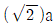
- 2a
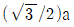
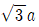
(정답률: 알수없음)
74. 내마모성이 필요한 곳에 널리 사용되는 것으로 표면은 단단하고 내부는 인성이 있는 주철재료서 압연용 롤, 차륜둥의 내마모 기계부품에 이용하는 주철은?
- 칠드(冷藏)주철
- 흑심가단주철
- Al 주철
- Ni 주철
(정답률: 알수없음)
75. 청동의 주성분은?
- Cu+Mn
- Cu+Zn
- Cu+Sn
- Cu+Fe
(정답률: 알수없음)
76. 다음의 합금원소 중에서 강의 경화능을 감소시키는 합금원소는 무엇인가?
- Co
- Si
- Mn
- Cr
(정답률: 알수없음)
77. 스프링강의 가장 좋은 결정 조직은?
- 페라이트(ferrite)
- 시멘타이트(cementite)
- 미디움펄라이트(midum pearlite)
- 오스테나이트(austenite)
(정답률: 알수없음)
78. 강의 담금질 경화능(Hardenability)을 측정하는 시험은?
- 초단파시험
- 자기이력시험
- 전자유도시험
- 죠미니시험
(정답률: 알수없음)
79. 재료가 영구히 파괴되지 않는 응력 중 최대의 것은?
- 크리프 한도
- 항복응력
- 에릭센값
- 피로한도
(정답률: 알수없음)
80. 알루미늄 합금의 종별 기호 다음에 첨부하는 질별기호 중 담금질 후 인공시효경화 시킨 것을 나타내는 기호는?
- To
- T2
- T5
- T10
(정답률: 알수없음)
5과목: 용접일반
81. 다음 그림에서와 같이 모서리 이음, T이음 등에서 볼 수 있는 결함으로 강의 내부에 모재 표면과 평행하게 충상으로 발생하는 결함은?
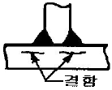
- 라멜라 테어(Lamellar tea)
- 토 균열(Toe crack)
- 라미네이션(Lamination)
- 루트 균열(Root crack)
(정답률: 알수없음)
82. 용접부에 생기는 잔류 응력을 제거하려면 다음 중 어떤 처리를 하면 가장 좋은가?
- 풀림을 한다.
- 불림을 한다.
- 담금질을 한다.
- 뜨임을 한다.
(정답률: 알수없음)
83. 산소-아세틸렌 용접불꽃의 설명으로 틀린 것은?
- 중성 불꽃에서는 산소와 아세틸렌의 공급량이 같다.
- 환원 불꽃은 아세틸렌의 공급이 너무 많을 때이다.
- 환원 불꽃은 산소의 공급량이 과다할 때이다.
- 온도가 가장 높은 불꽃은 탄화 불꽃이다.
(정답률: 알수없음)
84. 직류 아크의 전압 분포에 대한 설명으로 올바른 것은?
- 아크발생 중 전압강하는 양극의 전구간에서 일정하다.
- 아크길이는 전류세기와 비례한다.
- 아크기둥의 전압강하는 피복제의 종류와는 관계없다.
- 아크길이를 일정하게 하면 전압은 전류의 증가에 따라 약간 증가한다.
(정답률: 알수없음)
85. 일반적인 연강용 피복 아크 용접봉의 피복제 역할이 아닌 것은?
- 용착금속의 응고와 냉각속도를 빠르게 한다.
- 용착금속(Weld Metal)의 탈산 및 정련작용을 한다.
- 용융점이 낮은 적당한 점성을 가진 가벼운 슬래그(slag)를 만든다.
- 중성 또는 환원성 분위기를 만들어 대기 중 산소나 질소의 침입을 방지하고 용착금속을 보호한다.
(정답률: 알수없음)
86. KS 피복아크 용접봉 기호 중 저수소계 용접봉인 것은?
- E 4301
- E 4303
- E 4316
- E 4326
(정답률: 알수없음)
87. 스테인레스 강의 TIG 용접과 MIG 용접에 관한 일반적인 설명으로 틀린 것은?
- 보호가스로는 알곤가스를 사용한다.
- 직류 정극성을 사용하면 깊은 용입을 얻을 수 있다.
- 3mm 이하의 박판에는 TIG 용접보다 MIG 용접이 더 많이 사용된다.
- 피복 아크용접시 일반적으로 역극성이 사용된다.
(정답률: 알수없음)
88. 탄산가스 아크용접시 전진법에 비교하여 후진법을 설명한 것으로 가장 올바른 것은?
- 용입이 비교적 얕다.
- 용접비드 높이가 비교적 높다.
- 스패터 발생이 전진법보다 많다.
- 용접 비드 폭이 비교적 넓다.
(정답률: 알수없음)
89. 정격 2차전류가 300A, 정격 사용율이 40%인 아크 용접기에 서 200A로 용접시의 허용사용율은?
- 17.8[%]
- 60 [%]
- 90 [%]
- 100 [%]
(정답률: 알수없음)
90. 피복 아크용접에서의 아크길이와 아크전압과의 관계 설명으로 가장 적합한 것은?
- 아크 길이가 길어져도 아크 전압은 일정하다.
- 아크 길이가 길어지면 아크 전압은 증가하다.
- 아크 길이가 짧아지면 아크 전압은 증가하다.
- 아크 길이가와 아크 전압은 서로 관계가 없다.
(정답률: 알수없음)
91. 주철 모재에 연강봉의 용접봉을 사용하면 반드시 파열이 생기는데 그 원인과 가장 관계가 적은 것은?
- 탄소의 함유량이 다르기 때문
- 강과 주철의 용융점이 다르기 때문
- 강과 주철의 팽창계수가 다르기 때문
- 전기 전도도가 다르기 때문
(정답률: 알수없음)
92. 브레이징 이음매 부분에 미리 솔더를 놓고 가열하여 행하는 브레이징으로 정의되는 용접 용어는?
- 침적 브레이징(dip brazing)
- 단계적 브레이징(step brazing)
- 예치 브레이징(preplaced brazing)
- 면메김 브레이징(face-fed brazing)
(정답률: 알수없음)
93. 아크전압이 20 V, 아크전류는 150 A, 용접속도가 15cm/min일 때 용접 입열은 몇 Joule/cm 인가?
- 12000
- 24000
- 2000
- 45000
(정답률: 알수없음)
94. 맞대기 이음에 있어서 용접이 진행됨에 따라서 간격이 벌어진다든지, 좁혀진다든지 하는 변형에 가장 적합한 용어는?
- 회전변형
- 세로균형 변형
- 좌굴변형
- 각변형(가로굽힘 변형)
(정답률: 알수없음)
95. 다음 중 저항용접이 아닌 것은?
- 프로젝션(projection)용접
- 플라스마(plasma)용접
- 퍼커션(percussion)
- 플래시(flash)용접
(정답률: 알수없음)
96. 불활성가스 텅스텐 아크 용접기로 알루미늄을 용접할 경우 전극봉의 돌출길이가 보호 효과나 작업성에 중요한 영향을 미치는데, 다음 이음 중 아르곤 보호가스 향이 가장 많이 필요로 하는 이음은?
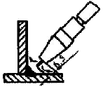
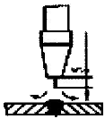
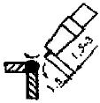
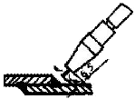
(정답률: 알수없음)
97. 알루미늄 합금용접에 일반적으로 불활성가스 아크용접을 하는 이유로 가장 적합한 것은?
- 팽창계수가 적기 때문이다.
- 비열 및 열전도도가 크므로 단시간에 용접온도를 높여야 한다.
- 고온강도가 나쁘며 용접변형이 작기 때문이다.
- 비중이 가볍기 때문이다.
(정답률: 알수없음)
98. 피복 아크 용접봉 피복제의 작용 설명으로 올바른 것은?
- 용융점이 높은 점성의 슬랙을 만든다.
- 용접금속의 응고 및 냉각속도를 빠르게 한다.
- 슬랙의 제거를 어렵게 하여 깨끗한 용접면을 만든다.
- 용접금속에 합금원소를 첨가하여 기계적 성질을 좋게 한다.
(정답률: 알수없음)
99. 탄산가스 아크용접에서 와이어 팁과 모재 사이(돌출길이)가 길 때 생기는 중요한 결함에 대한 설명으로 가장 적합한 것은?
- 스패터가 적어진다.
- 슬랙 혼입이 생기기 쉽다.
- 언더컷이 생기기 쉽다.
- 용입 불량이 생기기 쉽다.
(정답률: 알수없음)
100. 용접부에서 구조상의 용접 결함이 아닌 치수상의 결함인 것은?
- 균열
- 용접부 크기의 부적당
- 융합 불량
- 비금속 개재물
(정답률: 알수없음)